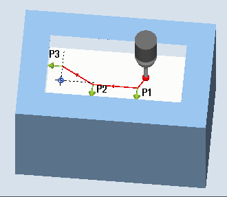
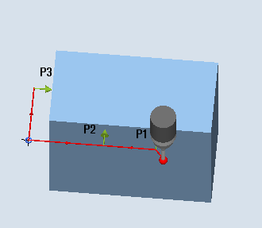
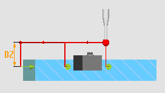

Mit dieser Messvariante kann eine rechtwinklige Innen- oder Außenecke eines Werkstückes vermessen werden.
Neben der Messung kann die Lage der Ecke als Werkstücknullpunkt in einer vorgegebenen Nullpunktverschiebung (NV) eingesetzt werden.
Die Messung erfolgt achsparallel zum WKS. Mit dem Maskenparameter α0, kann die Messbewegung kantenparallel angepasst werden. Diese Winkelvorgabe hat keine Auswirkung auf das Ergebnis.
Der Messzyklus fährt 3 Messpunkte an und ermittelt den Schnittpunkt der sich daraus ergebenden Geraden und den Verdrehungswinkel zur positiven 1. Achse der aktuellen Ebene.
Der Schnittpunkt/Winkel der Ecke, stellt deren Lage dar. Diese wird als MKS- und WKS-Wert, in den OVR[] Ergebnisparametern gespeichert. Wird der ermittelte Eckpunkt als Werkstücknullpunkt angewendet, werden die Sollwertvorgaben X0,Y0 (Bsp. G17) bei der Berechnung der Nullpunktverschiebung berücksichtigt.
|  Messen: Rechtwinklige Ecke innen (CYCLE961) |  Messen: Rechtwinklige Ecke außen (CYCLE961) |
Der Messtaster muss als Werkzeug mit Werkzeuglängenkorrektur aufgerufen werden.
Werkzeugtyp des Messtasters:
3D Multi-Taster (Typ 710)
Monotaster (Typ 712), nur bei Parametriervariante "polar"
| Hinweis |
In Verbindung mit dem Messtastertyp 712 ist eine SPOS-fähige Spindel erforderlich. |
Der Messtaster steht auf Messhöhe oder über der Ecke (siehe Schutzzone) gegenüber der zu messenden Ecke oder vor dem 1. Messpunkt.
Die Messpunkte müssen von hier kollisionsfrei angefahren werden können.
Die Messpunkte ergeben sich aus den programmierten Abständen L1 bis L3 und der Polposition (XP, YP). Beim Positionieren wird zusätzlich der α0 (Winkel zwischen X-Achse und 1. Kante in MKS) berücksichtigt.
Der Messzyklus generiert die erforderlichen Verfahrsätze und führt an den Messpunkten P1 bis P3, beginnend mit P1, die Messungen aus.
Schutzzone = Nein
Der Messtaster wird auf Messhöhe vorpositioniert und bleibt beim Vermessen der Ecke auf dieser Messhöhe. Eine Außenecke wird umfahren.
Schutzzone = Ja
Der Messtaster wird über der Ecke vorpositioniert. Beim Messen wird um den Wert im Parameter DZ in der 3. Achse der Ebene (Z bei G17) auf die Messhöhe gefahren und der entsprechende Messpunkt gemessen. Nach der Messung wird der Messtaster um den Wert des Parameters DZ angehoben und fährt zum nächsten Messpunkt, auf dem wieder abgesenkt wird.
0 (Messhöhe + DZ) bei G17">Schutzzone = Ja: Überfahren der Außenecke mit DZ>0 (Messhöhe + DZ) bei G17
Der Messtaster steht wieder auf der Ausgangsposition (gegenüber der gemessenen Ecke).
In Abhängigkeit des Parameters Schutzzone ja/nein steht der Messtaster auf Messhöhe oder über der Ecke.
Siehe auch:
Messen: Rechtwinklige Ecke (CYCLE961)